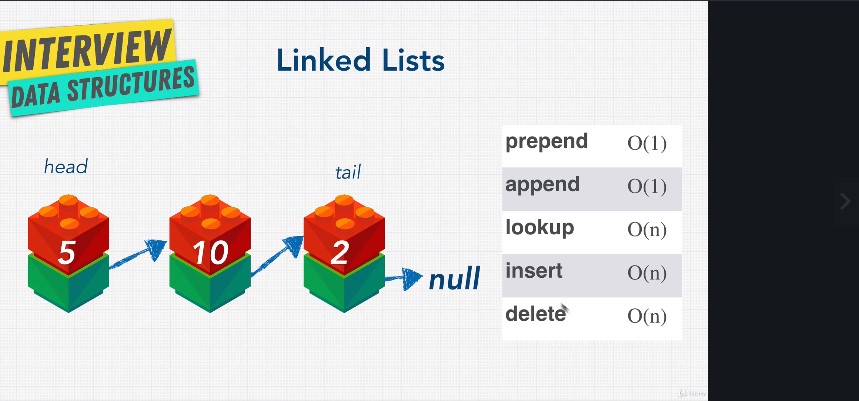

the first element is called the head and the last element is called the tail-(the pointer is null since there is nowhere to point to)
even though in the worst case- the index where we want to insert/ delete is the last one - the time is still O(n) - since we need to traverse the whole list to find the index
not cache friendly since the elements are scattered all over memory => traversing is slower than looping through an array
A pointer is just a reference to a "shelf in memory"
if 2 pointers reference to the same shelf in memory, even though one of them is deleted, the memory will still hold the content, until is not referenced anymore, and the garbage can be collected - the 2 pointer is deleted or points to another shelf - this happens only for languages that have the memory managed automatically - garbage collected - not for low level languages where you have to manage your memory manually
to be used when memory is limited and we need to do a lot of insertions and deletions, but less traversions(lookups)
are the way to go when the memory is not limited and